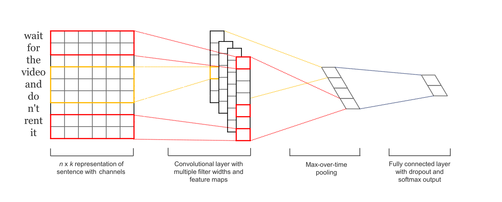

NLP каскад. Разметка текста по образцу или Классификация (Label Propagation)#
Модуль решает задачу
semi supervised разметки- на основе частично размеченного датасета модель пытается разметить остальные образцы. Работает для текстовых данных.
Идея для анализа бизнес-процесса
Текстовые атрибуты лога могут быть богаты на инсайты. Однако обычно они представлены в свободной форме и их обработка вручную затруднена. Часто владелец процесса понимает, на основе каких критериев группируются текстовые атрибуты - например, по месту возникновения проблемы или по исполнителю, по негативной или позитивной обратной связи клиента, либо как-то иначе. Размечать все данные может быть дорого и монотонно, а значит - субъективно. Идея заключается в том, чтобы предоставить модели достоверные образцы для каждой из ожидаемых групп текстов для того, чтобы по образу и подобию она разметила остальные.
В рамках библиотеки данная модель реализована как модуль sberpm.nlp.label_propagation.
Формализация задачи для анализа процессов#
Работаем с логом автоматизированной системы, в которой фиксируются обращения пользователя по шаблонам. Предположим, что 60% пользователей могут идентифицировать проблему явно и выбирают корректный шаблон, а 40% сомневаются и выбирают вид шаблона «Другая проблема». Мы уверены, что виды шаблонов на 100% покрывают существующие проблемы, поэтому хотим определить правильную категорию каждому обращению, которое попало в шаблон «Другая проблема». В таком случае, при применении алгоритма на текстовый атрибут лога, получаем новый атрибут вида «Группа текстовых комментариев».
Алгоритм в основе модуля#
Подход используется в случаях, когда группировка текста необходима строго по экспертной оценке принадлежности к группе от пользователя, другими словами, решается задача классификации (или обучение с учителем).
Теоретическая справка
Классификация (обучение с учителем) - задача отнесения объекта по совокупности его характеристик к одному из заранее известных классов.
Технический ландшафт#
Решение реализовано в два шага:
Получение векторного представления текстовых комментариев (те образцы, которые размечены как представители известных групп);
Адаптация модели под доменную область на этих образцах (англ. domain adoption) - иными словами, дообучение модели на конкретном контексте, чтобы она могла лучше разделять группы на основе эталонов-образцов;
Получение векторного представления для неразмеченной части текста и запуск процедуры предсказания (разметки) на предложенные группы.
Шаги 2 и 3 представляют собой архитектуру сверточной нейронной сети, на вход которой подается текст, внутри нее происходит получение векторного представления, дообучаемого на шаге 2, а на выходе - предсказание известной группы на основе вероятности принадлежности нового неизвестного текста к известным образцам (шаг 3).

Для векторизации был выбран подход BPEmb.
Теоретическая справка
Идея похожа на коды Хаффмана. Изначально единица языка - это символ, а словарь - последовательность символов. Шаг за шагом символы попарно объединяются, если встречаются вместе чаще других, и так постепенно пополняется словарь. Разновидности этой токенизации использовались как в GPT2, так и в моделях BERT, RoBERTa. Этот подход позволяет решить проблемы отсутствующих в словаре слов, которые мы не можем закодировать, поскольку слово теперь можно представить по известным частям.
Далее каждой попавшей в словарь последовательности присваивается вектор, и именно он используется в качестве входных данных для нейронных моделей при обработке естественного языка.
В дальнейших реализациях будут добавлены и другие способы векторизации текста, например, используемые в генеративных моделях (GenAI).
Модификация параметров алгоритма#
Параметр |
Пояснение к параметру |
|---|---|
Название текстовой колонки |
Название колонки с текстовыми данными. |
Название колонки с разметкой |
Название колонки с размеченными группами. |
Флаг неразмеченных образцов |
Указание на значение в колонке с разметкой, которым отмечены строки, подлежащие маркировке моделью, например «Разметить» или «Другое». |
Путь к модели |
Локальный путь к сериализованной модели. На текущий момент возможно передать путь только для модели класса BPEmb (рекомендуем к использованию ru.wiki.bpe.vs100000.model). |
Путь к токенизатору |
Локальный путь к токенизатору. На текущий момент возможно передать путь только для модели класса BPEmb (рекомендуем к использованию ru.wiki.bpe.vs100000.d300.w2v.bin). |
Размерность |
Размерность вектора для текста. Указывается в соответствие с выбранной моделью. Для рекомендованной на текущий момент составляет 300. |
Размер словаря |
Количество токенов, с которыми работает модель. Указывается в соответствие с выбранной моделью. Для рекомендованной на текущий момент составляет 100 000. |
Тип токенизатора |
Два вида токенизаторов - sentence_piece и context_embeddings. Токенизатор sentence_piece целесообразно применять, если корпус текстов содержит повторяющиеся фразы, включая аббревиатуры и особые термины. В то время как токенизатор context_embeddings предназначен для работы с текстами в стиле повествования, значит, может работать с синонимами и т.д. На текущий момент возможно выбрать только sentence_piece, в следующих версиях библиотеки будет добавлена возможность использования контекстных языковых моделей. |
Размер батча |
Количество текстов, которые используются в одной эпохе обучения в процессе адаптации модели под домен. Если текстов достаточно, значение параметра можно не изменять, иначе - понизить. |
Доля текстов для подсчета длины образца |
Параметр для указания того, какая доля текстов будет участвовать в расчете типовой длины образца текстов. Необходимо для того, чтобы унифицировать слишком длинные образцы и очень короткие. |
Количество эпох |
Количество итераций адаптации языковой модели под домен. Адаптация (иначе - дообучение) необходимо для того, чтобы модель адаптировала свои знания под текстовый датасет и токены, которые она раньше «не видела». При малом количестве размеченных текстов не рекомендуется увеличивать параметр. |
Краевые случаи и ограничения#
Важно, чтобы модель научилась различать группы текстов, то есть необходимо, чтобы она увидела достаточное количество образцов для идентификации закономерностей и особенностей каждой из групп. Необходимо иметь в виду следующее:
Уникальных примеров текстов на каждую группу должно быть не менее 3 (учимся, проверяем, считаем общую метрику на валидации), но крайне рекомендуется больше.
Рекомендуемое количество размеченных примеров - 30-40% датасета.
Не обязательно размечать одинаковое количество текстов каждой группы, но допускать сильный дисбаланс групп не желательно (модель будет склонна предсказывать более частую группу, так как математически шанс ответить «правильно» выше).
Параметр |
Проблема |
Возможное Решение |
|---|---|---|
{bdg-light-line}Доля текстов для подсчета средней длины образца`` |
Мало образцов текста для класса |
Это количество текстов из выборки, на основе которых будет определяться типовая длина предложения (а точнее - количество токенов в нем, при этом токен != слово). По дефолту, при расчете типовой длины исключается 5% самых длинных предложений, а максимальное значение из оставшихся и является типовой длиной. Затем 5% предложений, которые исключались при расчете, сокращаются справа до типовой длины. Бывает так, что тексты начинаются одинаково, и при условии удаления 5% токенов сверх установленной длины вновь появляются дубликаты текстов, а иногда даже тексты, размеченные разными группами. Рекомендуется удалять одинаковые части текста в начале, если они известны. Другой вариант обхода этого исключения - выставить порог 1.0 и взять 100% текстов для подсчета длины, в таком случае типовым образцом будет считаться самый длинный в выборке. Более предпочтительным считаем первое предложенное решение. |